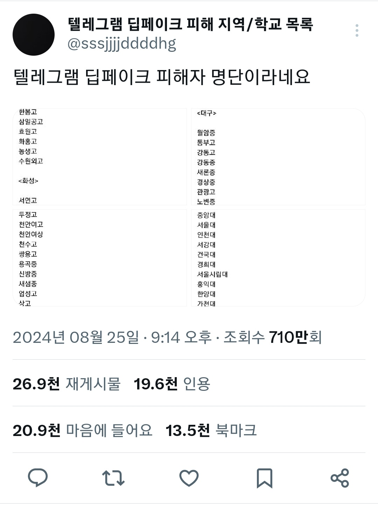
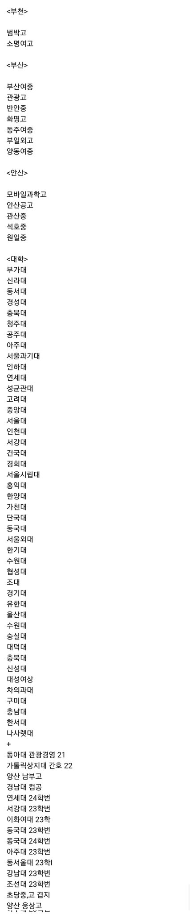
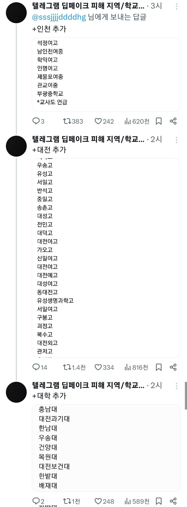
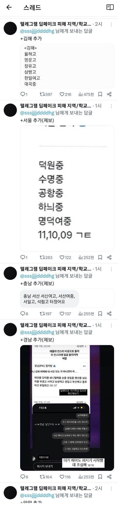
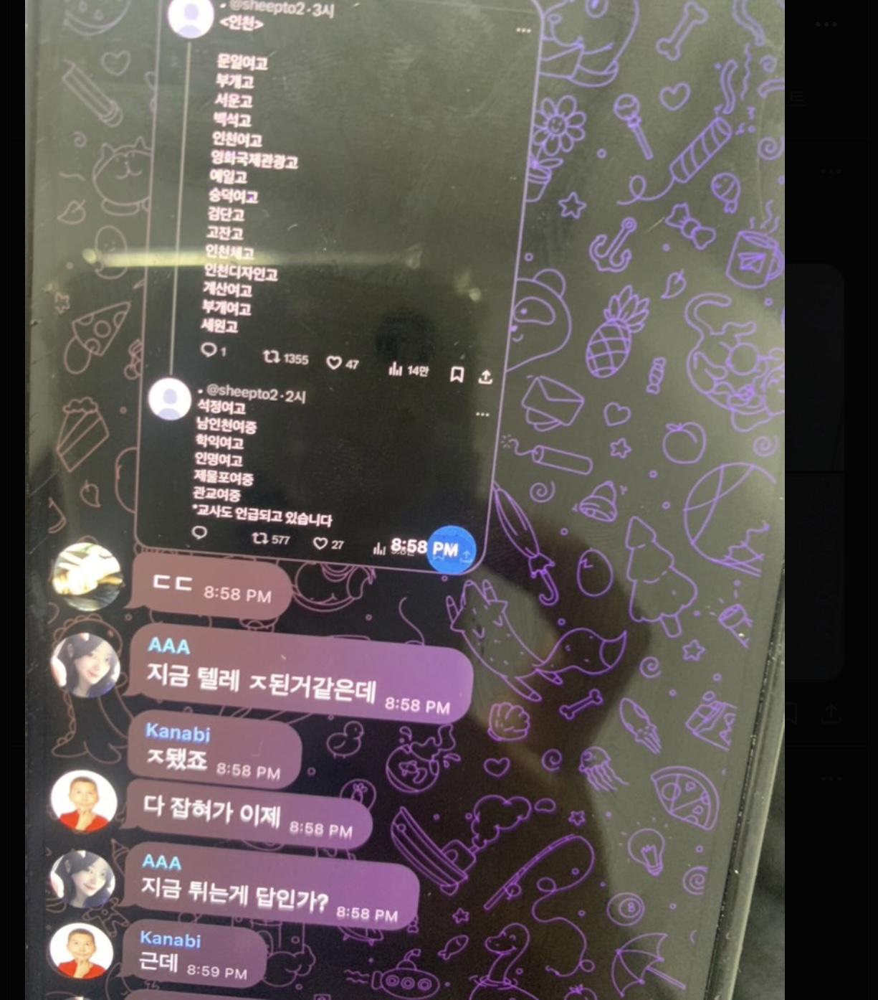
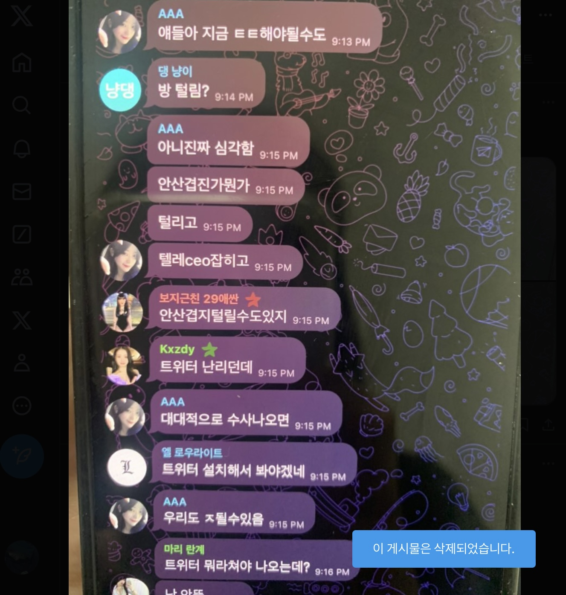

All schools? What does that mean?
Here is the answer.
Korean feminists went undercover and investigated the case themselves. Really every school..
Poodle
@poodle
In fact, secret men's Telegram rooms were discovered in over 70% of South Korean schools where female students' faces were photoshopped into porn using AI.
Girls in South Korea created a list of schools to check if they were victims. This is just a part of it.




Poodle@poodle
This is a plan to escape after the men's secret Telegram room was discovered by the women.
Telegram Undercover
@undercover
[Someone posted it but deleted it right away. But I saw it, and I feel like I should share it anyway.]


Poodle@poodle
Your attention has created a miracle of getting the Korean government and media to work.
Thank you. Thank you feminists around the world.
Poodle
@poodle
Now all the Korean news is reporting on the deepfake incident. And the South Korean president and opposition leader also ordered a resolution to this incident.
This miracle happened in just a few days because feminists overseas showed solidarity with feminists in the South 🧵
Poodle@poodle
Poodle
@poodle
감사합니다 Thank you Gracias Merci Danke ありがとうございます 谢谢 Grazie Спасибо شكراً धन्यवाद Obrigado Teşekkür ederim Cảm ơn ขอบคุณ Terima kasih Dziękuję Dank u Tack
Thank you to all the sisters and feminists around the world. 🙇♀️
Poodle@poodle
Poodle
@poodle
🇰🇷 Breaking news 🇰🇷
South Korean journalists who wrote articles about Telegram deepfake child sex crimes are being blackmailed with deepfakes by the perpetrators.
On September 1, South Korean women will launch a hashtag campaign asking the South Korean government to expel the perpetrator from school and reveal his identity (video is evidence)